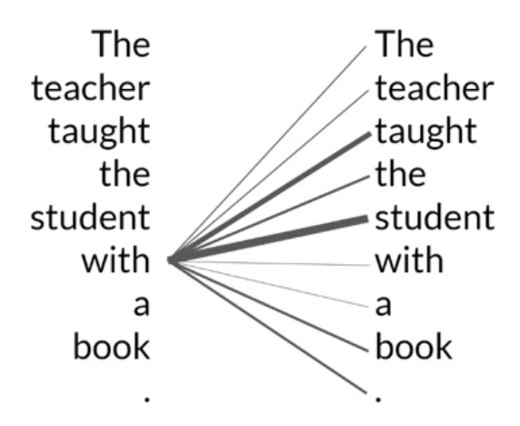
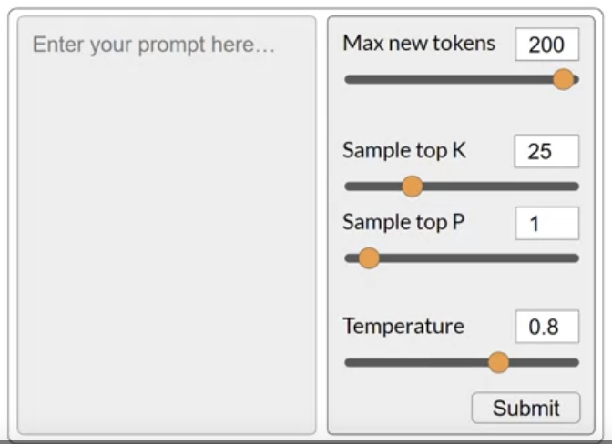
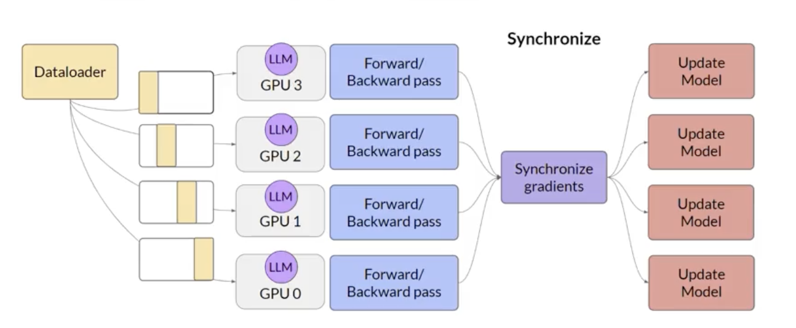

1. IntroductionGenerative AI and LLMs are general-purpose technology i.e. similar to other general-purpose technologies such as deep learning or electricity, it's useful not just for a single application but for a lot of different applications that span many corners of the economy.1.1. Generative AI & LLMsGenerative AI is a subset of traditional ML.The ML models that underpin generative AI have learned these abilities by finding statistical patterns in massive datasets of content that was originally generated by humans.LLMs have been trained on trillions of words over many weeks with large amounts of compute power.These foundation models exhibit emergent properties beyond language alone and to breaking down complex tasks, reason, and problem solve.* Foundation models are sometimes called base models.* Figure below shows the existing base models where their size shows their relative size in terms of number of parameters.* We can think model size as memory so the more parameters a model has the more memory is has it can perform more sophisticated tasks.The way you interact with LLMs is quite different than other ML models.LLMs take natural language (rather than code) as input (it's called the prompt) and perform tasks much as a human would.The space or memory that is available to the prompt is called the context window.The output of the model is called a completion.* The completion is comprised of the text contained in the original prompt, followed by the generated text.* The act of using the model to generate text is known as inference.1.2. LLM Use Cases and TasksNext word prediction is the base concept behind a number of different capabilities starting with a basic chatbot.You can use the next word prediction capability in other text generation tasks like writing an essay, summarization, translation, code generation.You can also use LLMs to carry out smaller, focused tasks like information retrieval.* e.g. Named Entity Recognition.Another area of active development is augmenting LLMs by connecting them to external data sources or using them to invoke external APIs.Provides the knowledge for the model that it didn't have when it was trained.Provide the power to interact with the real-world.As the scale of foundation models grows from hundreds of million to hundreds of billions, the subjective understanding of language that the model possesses also increase.Having said that, please be noted that smaller models can be fine-tuned to perform well on specific tasks.Back To Top1.3. Text Generation Before TransformersPrevious generations of language models made use of an architecture called Recurrent Neural Networks (RNNs).RNNs were limited by the amount of compute and memory needed to perform well at generative tasks.To successfully predict the next word, models need to see more than just the previous few words.Models need to have an understanding of the whole sentence or even the whole document.The problem here is that language is complex.* In many languages one word can have multiple meanings (i.e. homonyms). * Words can have different meaning depending on the context i.e. syntactic ambiguity.e.g. "The teacher taught the student with the book." is it the teacher's book? or with the student's book? How can an algorithm make sense of human language if sometimes we can't?In 2017, the "Attention Is All You Need" paper by Google and U of Toronto proposed the transformer architecture.This novel approach unlocked the progress in generative AI as we see today.It can be scaled efficiently to use multi-core GPUs.It can parallel process input data making use of much larger training datasets.It's able to learn to pay attention to the meaning of the words it's processing.1.4. Transformers ArchitectureBuilding LLMs using the transformer architecture dramatically improved the performace of natural language tasks over the earlier generation of RNNs.The power of transformer architecture lies in its ability to learn the relevance and context of all of the words in a sentence not just to each word next to its neighbor, but to every other word in a sentence.It also applies attention weights to those relationships so that the model learns the relevance of each word to each other words no matter where they are in the input.The attention weights are learned during LLM training. The diagram below is called an attention map it's useful to illustrate the attention weights between each word and every other words.

Self-attention is the ability to learn attention across the input. It can significantly improve the model's ability to encode language.Back To Top1.4.1. How the transformer model works at the high level?Below is a simplified diagram of the transformer architecture.The transformer architecture is split into two distinct parts:EncoderDecoderThese components work in conjunction with each other and they share a number of similarities.Before passing texts to the model, we need to first tokenize the words i.e. converting words into numbers.You can choose from multiple tokenization methods:* Token IDs to match two complete words.* Token IDs to represent parts of words.Once you select a tokenizer to train the model, you must use the same tokenizer when you generate text.After tokenizing the words we can pass them to the embedding layer.This is a trainable vector embedding space i.e. a high-dimensional space where each token is represented as a vector and occupies a unique location within that space.Each token ID (in the vocabulary) is matched to a multi-dimensional vector the intuition is that these vectors learn to encode the meaning and context of individual tokens in the input sequence.Embedding vector spaces have been used in NLP for some time (e.g. word2vec).In the original paper the vector size is 512.After the embedding layer you also add (i.e. summation) positional encoding.The model processes each of the input tokens in parallel. By adding the positional encoding, you preserve the information about the word order and don't lose the relevance of the position of the word in a sentence.Then, we pass the resulting vectors to the self-attention layer.In this layer, the model analyzes the relationship between the tokens in your input sequence.This allows the model to attend to different parts of the input sequence to better capture the contextual dependencies between the words.The self-attention weights learned during training and stored in these layers reflect the importance of each word in that input sequence to all other words in that sequenc.The transformer architecture has what's called a multi-headed self-attention. i.e. multiple sets of self-attention weights (or heads) are learned in parallel, independently from each other.* The number of attention heads included in the attention layer varies from model to modelNumbers in the range of 12 to 100 are common.* * The intuition here is that each self-attention head will learn a different aspect of language. e.g. one head may see the relationship between the people entities in our sentence, whilst another head may focus on the activity of the sentence such as if the words rhyme.* The output of the multi-headed attention layer is process through a fully-connected feed-forward network.The output of this layer is a vector of logits proportional to the probability score for each and every token in the tokenizer dictionary.The logits are then passed to a final softmax layer where they're normalized into a probability score for each word.This output includes a probability for every single word in the vocabulary.One single token will have a score higher than the rest this is the most likely predicted token.Back To Top1.5. Generating Text with TransformersLet's walk through an step by step process of a simple translation task in a transformer architecture. A translation task is a seq-to-seq task. As you can see below, the output of the encoder is inserted into the middle of the decoder to influence the decoder's self-attention mechanism.Next, a start of sequence token is added to the input of the decoder This triggers the decoder to predict the next token, which it does based on the contextual understanding that it's been provided from the encoder.The output of the decoder's self-attention layers gets passed through the decoder feed-forward network and through a final softmax output layer.We continue this loop, i.e. passing the first token output back to the input to trigger the generation of the next token until the model predicts an end-of-sequence token.There are multiple ways in which you can use the output from the softmax layer to predict the next token This can influence how creative your generated text is.You can split parts of the transformer architecture for variations of the architecture.Encoder-only models also work as seq-to-seq models, but without further modification, the input sequence and the output sequence are the same length their use is less common these days.* But, by adding additional layers to the architecture, you can train encoder-only models to perform classification tasks such as sentiment analysis.* BERT is an example of an encoder-only model.* Encoder-Decoder models perform well on seq-to-seq tasks such as translation, where the input sequence and the output sequence can be different lengths. * You can also train and scale this type of model to perform general text generation tasks.* BART, T5 are examples of such models.* Decoder-only models some of the most commonly used models today.* These models can now generalize to most tasks. * GPT family of models, BLOOM, Jurassic, Llama, etc. are popular decoder-only models.Back To Top1.6. Prompting and Prompt EngineeringThe full amount of text (or the memory) that is available to use for the prompt is called the context window.Prompt engineering the work to develop and improve the the prompt (to get what you want from the model).One powerful strategy to get the model to produce better outcomes is to include examples of the task that you want the model to carry out inside the prompt. This is called in-context learning (ICL).Including your input data within the prompt is called zero-shot inference.Larger models (e.g. GPT3+) are generally good enough that they could produce good outcomes with zero-shot inference. Smaller models (e.g. GPT-2) may struggle to follow the instructions.This is where providing an example within the prompt can improve performance the inclusion of a single example is known as one-shot inference.You can extend the idea of one-shot inference to few-shot inference by providing more than one example.To recap, you can engineer your prompt to encourage the model to learn by examples. While the large models are good with zero-shot inference, smaller models can benefit from one-/few-shot inference that includes examples of the desired behavior.The only caveat here is the context window. It puts a limit on the amont of ICL you can do.Generally, if you found that your model isn't performing well even with a few examples, you should try fine-tuning the model.You might want to try a few models to find the one that works for your specific use case.Back To Top1.7. Generative ConfigurationsIn this section, we examine some of the methods and associated configuration parameters that you can use to influence the way that the model makes the final decision about next-word generation.If you've used LLM playgrounds, you might have seen controls like this. NOTE These are different from the training parameters. These parameters are invoked at inference time.

Max new tokens limit the number of tokens that the model will generate, i.e., putting a cap on the number of times will go through the selection process.NOTE Max tokens doesn't necessarily mean that you will get that number of tokens excatly because it might got to an end-of-sequence token.The output from the transformer's softmax layer is a probability distribution across the entire dictionary of words that the model uses.Most LLMs, by default, will operate with so-called greedy decoding. this is where the model will always choose the word with highest probability.* This method can work very well for short generation but is susceptible to repeated words (or repeated sequences of words).* * If you want to generate text that's more natural, more creative, and avoids repeating words, you need to use some control.* * Random sampling is the easiest way to introduce some variability.Instead of selecting the most probable word every time, with random sampling, the model chooses an output word at random using the probability distribution to weight the selection i.e. the probabilities are used as weights for random sampling.On the other side, there's a possibility that it gets too creative. i.e., producing words that cause the generation to wander off into topics/words that just don't make sense.NOTE In some implementations, you may need to disable greedy and enable random sampling explicitly, e.g., the HuggingFace transformers implementation that we'll use in the lab requires that we set
do_sample=True
.top K & top P both are sampling techniques that we can use to help limit the random sampling and increase the chance that the output will be sensible.top K select an output from the top-k results after applying random-weighted strategy using the probabilities i.e., instructs the model to choose randomly (based on the probability weights) from only the K tokens with the highest probability.top P select an output using the random-weighted strategy with the top-ranked consecutive results by probability and with a cumulative probability p. Temperature another parameter to control the randomness of the model.This parameter influences the shape of the probability distribution that the model calculates for the next token.Broadly speaking, the higher the temperature the higher the randomness.It's a scaling factor that's applied within the final softmax layer of the model that impacts the shape of the probability distribution of the next token.In contrast to top-k and top-p, changing the temperature actually alters the predictions that the model will make.If you choose a low value of temperature, say < 1, the resulting probability distribution from the softmax layer is more strongly peaked with the probability being concentrated in a smaller number of words.* The model use this distribution for random sampling and the resulting text will the less random and will more closely follow the most likely word sequences that the model learned during training.If you choose a high value of temperature, say > 1, then the model will calculate a broader flatter probability distribution for the next token. This leads the model to generate text with a higher degree of randomness and more variability more creative text.Temperature = 1 defualt softmax function.Back To Top1.8. Generative AI Project LifecycleHere's a diagram of the overall lifecycle.1.8.1. ScopeLLMs are capable of carrying out many tasks, but their abilities depends strongly on the size and architecture of the model think about the function that LLM will have in your application.Getting really specific about what you need your model to do can save you time and compute cost.1.8.2. SelectAfter determining the scope, your first decision is whether to train your own model from scratch or work with an existing base model.In general, you'll start with an existing model.1.8.3. Adapt and Align the ModelAfter you picked (or trained) the model, the next step is to assess its performance and carry out additional training, if needed for your application.Prompt engineering can sometimes be enough to get your model to perform well so, you're likely start by trying in-context learning, i.e. using examples suited to your task and use case.There are still cases, however, where the model may not perform as well as you needed, even with one- or few-shot inference.In this case you can try fine-tuning.It's also important to make sure that the model is aligned with human preferences. We're going to do that using a technique called Reinforcement Learning with Human Feedback (RLHF).An important aspect of all these techniques mentioned above is evaluation.Here, we use some metrics and benchmarks to determine how well our model is performing or how well aligned it is to our preferences.NOTE This step can be highly iterative i.e. basically means try a technique evaluate if not statisfactory repeat.1.8.4. Application IntegrationWhen you get a model that performs well and it's well-aligned, you can deploy it to your infrastructure and integrate it with your application.At this stage, an important step is to optimize your model for deployment ensuring you're making the best use of your compute resources and provide the best possible user experience.You also have to consider any additional infrastructure that your application will require to work well.There are some fundamental limitation with LLMs that can be difficult to overcome through training alone e.g. their tendency to invent information when they don't know the answer (hallucination), or their limite ability to carry out complex reasoning and mathematics.There are some powerful techniques to overcome these limitations (which we'll discuss later).Back To Top1.9. Introduction to AWS LabsThe environment that we're going to use here is called Vocareum. we launch an AWS account of our own that will give us access to Amazon SageMaker. so you can run Jupyter notebooks without any cost.STEP 1 Once you get to the Vocareum lab environment always "Start Lab". the icon next to AWS has to turn green.You have 2 hours with each lab. Once you're done, you don't need to do anything. Just close the browser tab.STEP 2 Click on the AWS to get to the AWS console website Find SageMaker Studio Open StudioSTEP 3 OpenLaucher go to System Terminal run this command:
Click on the Folder you can see the lab notebook.1.9.1. Lab 1In this lab, you will do the dialogue summarization task using generative AI. You will explore how the input text affects the output of the model, and perform prompt engineering to direct it towards the task you need. By comparing zero shot, one shot, and few shot inferences, you will take the first step towards prompt engineering and see how it can enhance the generative output of Large Language Models. Back To Top
2. LLM Training and Scaling Laws2.1. Pre-training LLMs2.1.1. Considerations for choosing a modelThe choices are to either:Work with an existing model Pre-trained LLMTrain your own model from scratch Custom LLM* NOTE On some specific applications this option might be advantageous but in general, mainly due to compute costs, the first option is preferred, i.e. using an existing foundation model.HuggingFace and PyTorch have created hubs where you can browse different foundation LLMs. A really useful feature of these hubs is the inclusion of model cards they describe important details including the best use cases for each model, how it was trained, and known limitations.The exact model that you'll choose will depend on the details of the task you need to carry out.Variants of the transformer model architecture are suited to different language tasks, largely because of differences in how the models are trained.To know which model to use, we need to understand how these different variants are trained.2.1.2. Model Architectures and Pre-training ObjectivesPre-training the initial training process for LLMs.LLMs encode a deep statistical representation of language. This happens during pre-training where model learns from vast amount (e.g. petabytes of data) of textual data.The text data is pulled from many sources like * scrapes off the internetThis data is then further processed to increase quality, address bias, and remove other harmful content as a result of this data quality curation, often only 1-3% of tokens are used for pre-training.You should consider this when you want to estimate how much data you need to collect if you decide to pre-train your own model.* corpora of texts assembled specifically for training language models.* Pre-training requires a large amount of compute and GPUs.As we mentioned in previous sections, there are three variants of the transformer models (see below).Each of these models is trained on a different objective and so learns how to carry out different tasks.Encoder-only models are also known as Autoencoding models they're pre-trained using Masked Language Modeling (MLM).* In MLM tokens in the input sequence are randomly masked and the training objective is to predict the masked tokens in order to reconstruct the original sentence.* This is also called a denoising objective.* * Autoencoding models build bi-directional representations of the input sequence i.e. the model has an understanding of the full context of a token and not just of the words that come before.* * Encoder-only models are ideally suited to task that benefit from this bi-directional contexts. Good use cases are:Sentiment analysis sentence-level taskNamed Entity Recognition (NER) token-level taskWord classification token-level task* Some well-known examples of an autoencoder model are:BERTRoBERTa
Decoder-only models are also known as Autoregressive models they're pre-trained using Causal Language Modeling (CLM).* In CLM the training objective is to predict the next token based on the previous sequence of tokens.* * Predicting the next token is sometimes called Full Language Modeling.* * Decoder-based autoregressive models mask the input sequence and can only see the input tokens leading up to the token in question.* The model has no knowledge of the end of the sentence.* * The model then iterates over the input sequence one by one to predict the following token.In contrast to the encoder architecture, this means that the context is unidirectional.* Models of this type make use of the decoder component of the original architecture without the encoder.* * Decoder-only models are often used for:Text generation* Larger decoder-only models show strong zero-shot inference abilities, and can often preform a range of tasks well.* * Well-known examples of decoder-based autoregressive models:GPTBLOOMEncoder-decoder models are also known as sequence-to-sequence models uses both the encoder and decoder parts of the original transformer architecture.* The exact details of the pre-training objective vary from model to model.* * A popular seq-to-seq model is T5 pre-trains the encoder using span corruption which masks random sequences of input tokens.Those masked sequences are then replaced with a unqiue sentinel token.Sentinel tokens are special tokens added to the vocabulary but do not correspond to any actual word from the input text.The decoder is then tasked with reconstructing the mask token sequences autoregressively.The output is the sentinel token followed by the predicted tokens.* Good use cases:TranslationSummarizationQuestion Answering* Well-known examples of seq-to-seq models:T5BARTModel Architectures and Pre-training ObjectivesBack To Top2.1.3. The Significance of Scale: Task AbilityLarger models of any architecture are typically more capable of carrying out their tasks well.e.g. BERT has 110M parameters vs. BLOOM has 176B parameters!The larger a model the more likely it is to work as you needed to without additional in-context learning or further training.NOTE Training these large models are also very expensive so much so that it may be infeasible to continuously train larger and larger models.The ability to scale these models are powered by introduction of new ideas such as:Highly scalable transformer acrchitectureAccess to massive datasets for trainingDevelopment of more powerful compute resources Back To Top2.2. Computational Challenges of Training LLMsOne of the most common issues you still counter when you try to train large language models is running out of memory.You encounter this issue because most LLMs are huge and require a tone of memory to store and train all of their parameters.CUDA (Compute Unified Device Architecture) a collection of libraries and tools developed for Nvidia GPUs.Libraries such as PyTorch and TensorFlow use CUDA to boost performance on matrix multiplication and other operations common to deep learning.2.2.1. Estimating the GPU RAM RequiredApproximate GPU RAM needed to store 1B parameters1 parameter = 4 bytes (32-bit float)1B parameters = 4 x 109 bytes = 4 GB i.e. 4 GB of RAM @ 32-bit full precisionNOTE This is just the memory required to store the model weights. If you want to train the model, you'll have to plan for additional components that use GPU memory during training. These include:Two Adam Optimizer statesGradientsActivationsTemporary variables needed by your functionsTo account for all of this overhead during training, you'll actually require approximately 20 times the amount of GPU RAM that the model weights alone take up 80 GB @ 32-bit full precision (for 1B parameter model)80 GB is the memory capacity of a single Nvidia A100 GPU.What options do you have to reduce the memory required for training?Back To Top2.2.2. QuantizationThe main idea here is that you reduce the memory required to store the weights of your model by reducing their precision from 32-bit float to 16-bit float or 8-bit integer numbers.Quantization statistically projects the original 32-bit floating point numbers into a lower precision space, using scaling factors calculated based on the range of the original 32-bit float.The corresponding data types used in deep learning frameworks and libraries are: FP32 32-bit float covers number in the range from ~3e-38 to 3e38.* Requires 4 bytes of memory.* FP16 or BFLOAT16 16-bit float covers number in the range from -65504 to 65504.* Requires 2 bytes of memory.INT8 8-bit integerNOTE Here's how the bits are allocated to represent a number in binary (in 32-bit float):1 bitsign8 bitexponent23 bitfraction also called Mantissa or Significand it shows the precision.This loss in precision due to quantization is often acceptable in most cases because you're trying to optimize for memory footprint.BFLOAT16 QuantizationBFLOAT16 (BF16) has become a popular alternative to FP16, recently.BFLOAT16 (Brain Floating Point Format) developed at Google Brain has become a popular choice in deep learning.Many LLMs, including FLAN-T5, have been pre-trained with BFLOAT16.BF16 is a hybrid between half precision FP16 and full precision 32FP.BF16 significantly helps with training stability and is supported by newer GPUs such as Nvidia's A100.BF16 is often described as a truncated 32-bit float. as it captures the full dynamic range of the full 32-bit float that uses only 16 bits.BF16 uses the full 8 bits to represent the exponent, but truncates the fraction to just 7 bits. This not only saves memory, but also increases model performance by speeding up calculations.The downside of FP16 is that it's not well-suited for integer calculations, but these are relatively rare in deep learning.INT8 QuantizationIf you use 1 bit for the sign, INT8 values are represented by the remaining seven bits This gives a range to represent numbers from -128 to 128.This brings new memory requirement down from 4 bytes to just one byte but also results in pretty dramatic loss of precision.By applying quantizaiton, you can reduce your memory consumption required to store the model parameters down to only 2 GB using 16-bit half precision (50% saving) you could further reduce the memory footprint by another 50% by representing model parameters as 8 bit integers which requires only 1 GB of GPU RAM.Quantization will give you the same degree of savings when it comes to training. If you want to train using a single GPU, consider 16-bit or INT8 quantization.Remember, larger models need multiple GPUs and setting up distributed computing. That's why training your own model is super expensive.Back To Top2.3. Efficient Multi-GPU Compute StrategiesUse these strategies when your model is too big to fit in a single GPU.Even if your model does fit onto a single GPU, there are benefits to using multiple GPUs to speed up your training.2.3.1. Distributed Data Parallel (DDP)You'll begin by considering the case where your model is still fits on a single GPU.The first step in scaling model training is to distribute large data-sets across multiple GPUs and process these batches of data in parallel.A popular implementation of this model replication technique is PyTorch's Distributed Data Parallel (DDP).DDP copies your model onto each GPU and sends batches of data to each of the GPUs in parallel.Each data set is processed in parallel and then a synchronization step combines the results of each GPU which in turn updates the model on each GPU which is always identical across chips.

2.3.2. Model ShardingNOTE DDP requires that your model weights and all of the additional parameters, gradients, and optimizer states fit onto a single GPU.If your model is too big to fit into a single GPU, you sould consider another technique called model sharding.A popular implementation of model sharding is PyTorch's Fully Sharded Data Parallel (FSDP).FSDP is motivated by a paper from Microsoft in 2019 that proposed a technique called ZeRO. * ZeROZero Redundancy Optimizer the goal of ZeRO is to optimize memory by distributing or sharding model states across GPUs with zero data overlap this allows you to scale model training across GPUs when your model doesn't fit in the memory of a single GPU.2.3.3. ZeRO: Zero Redundancy OptimizerThe largest memory requirements are for the optimizer states. it takes up twice as much space as model weights. Model weights and gradients are the next large ones.One limitation of model replication strategy is that you need to keep a full model copy on each GPU, which leads to redundant memory consumption.ZeRO on the other hand, eliminates this redundancy by distributing (i.e. sharding) the model parameters, gradients, and optimizer states across GPUs instead of replicating them.At the same time, the communication overhead for syncing model states stays close to that of the previously discussed DDP.ZeRO offers three optimization stages. ZeRO Stage 1 shards only optimizer states across GPUs This can reduce your memory footprint by up to a factor of four.ZeRO Stage 2 shards the gradients across chips. Stage 1 & 2 together can reduce memory footprint by up to eight times.ZeRO Stage 3 shards all components including the model parameters across GPUs. When combined with Stage 1 & 2, memory reduction is linear with a number of GPUs e.g., sharding across 64 GPUs could reduce your memory by a factor of 64.Back To Top2.3.4. DDP & ZeROWith FSDP you can work with models that are too big to fit on a single GPU.In contrast to DDP, where each GPU has all of the model states, FSDP requires you to collect this data from all of the GPUs before the forward and backward pass.Each GPU requests data from the other GPUs on-demand to materialize the sharded data into unsharded data for the duration of the operation.After the operation, you release the unsharded non-local data back to the other GPUs as original sharded data.* You can also choose to keep it for future operations during backward pass, for example.* NOTE this requires more GPU RAM again.* This is a typical performance vs. memory tradeoff decision.* In the final step after the backward pass, FSDP synchronizes the gradients across the GPUs in the same way they were for DDP.Model sharding as described with FSDP:Helps to reduce overall GPU memory utilization.Supports offloading to CPU if needed.To manage the tradeoff between performance and memory utilization you can configure the level of sharding using FSDP's sharding factor.* Full Replication A sharding factor of 1 basically removes the sharding and replicates the full model similar to DDP.* Full Sharding A sharding factor set to the maximum number of GPUs you turn on full sharding. This has the most memory savings, but increases the communication volume between the GPUs.* Hybrid Sharding Any sharding factor in between. Back To Top2.3.5. FSDP vs. DDPThe comparison is measured in teraflops per GPU 1 teraflop1 trillion floating-point operations per second.Tests were performed using a maximum of 512 Nvidia A100 GPUs, each with 80 GB of RAM.
Figure 1:FSDP performance for different size T5 modelsFor 11.3B model, DDP runs into out-of-memory problem.
Figure 2:7% decrease in per GPU teraflops when increasing the number of GPUs from 8 to 512 for the 11.3B parameter T5 model. B batch size
As the model grows in size and is distributed across more and more GPUs, the increase in communication volume between chips starts to impact the performance, slowing down the computation.In summary, this shows that you can use FSDP for both small and large models and seamlessly scale your model training across multiple GPUs.Back To Top2.4. Scaling Laws and Compute-Optimal ModelsIn this section, we explore the relationship between model size, training configuration, and performance the goal is to determine how big the models need to be.The goal during pre-training is to maximize the model performance of its learning objective, which is minimizing the loss when predicting tokens.Two options you have to achieve better performance are:Increasing the size of the datasetIncreasing the number of parameters in your modelIn theory, you could scale either or both these quantities to improve performance.However, another issue to take into consideration is your compute budget which includes factors like:* the number of GPUs* time you have available for training 2.4.1. Compute Budget for Training LLMsLet's define a unit of compute that quantifies the required resources.
Figure 3:y-axis is logrithmic, Each increment vertically is a power of 10.
2.4.2. Compute Budget vs. Model PerformanceThere are actually well-defined relationships between these three scaling choices:data sizemodel sizecompute budgetHere's a figure from a research paper by OpenAI that explores the impact of compute budget on model performance.y-axis test loss you can consider as a proxy for model performance where smaller values are better.x-axis compute budget in units of petaFLOP per second dayslarger numbers can be achieved by either using more compute power or training for longer or both. Each thin blue line here shows the model loss over a single training run.Looking at where the loss starts to decline more slowly for each run, reveals a clear relationship between the compute budget and the model's performance.This can be approximated by a power-law relationship, shown by this pink line.A power law is a mathematical relationship between two variables, where one is proportional to the other raised to some power. When plotted on a graph where both axes are logarithmic, power-law relationships appear as straight lines.NOTE The relationship here holds as long as model size and training dataset size don't inhibit the training process.Taken at face value, this would suggest that you can just increase your compute budget to achieve better model performance.In practice however, the compute resources you have available for training will generally be a hard constraint set by factors such as: * Hardware* Project timeline* Financial budgetIf you hold your compute budget fixed, the two levers you have to improve your model's performance are the size of the training dataset and the number of parameters in your model. The OpenAI researchers found that these two quantities also show a power-law relationship with a test loss, in the case where the other two variables are held fixed. This is another figure from the paper exploring the impact of training dataset size on model performance.* Here, the compute budget and model size are held fixed and the size of the training dataset is vary. * * The graph shows that as the volume of training data increases, the performance of the model continues to improve. * * In the second graph, the compute budget and training dataset size are held constant. Models of varying numbers of parameters are trained. As the model increases in size, the test loss decreases indicating better performance. What's the ideal balance between these three quantities?Both research and industry communities have published a lot of empirical data for pre-training compute optimal models.In a paper published in 2022, a group of researchers led by Jordan Hoffmann, Sebastian Borgeaud and Arthur Mensch carried out a detailed study of the performance of language models of various sizes and quantities of training data.The goal was to find the optimal number of parameters and volume of training data for a given compute budget. The authors named the resulting compute optimal model, Chinchilla.The Chinchilla paper hints that many of the 100 billion parameter large language models like GPT-3 may actually be over parameterized, meaning they have more parameters than they need to achieve a good understanding of language and under trained so that they would benefit from seeing more training data.The authors hypothesized that smaller models may be able to achieve the same performance as much larger ones if they are trained on larger datasets.In this table, you can see a selection of models along with their size and information about the dataset they were trained on.One important takeaway from the Chinchilla paper is that the optimal training dataset size for a given model is about 20 times larger than the number of parameters in the model.Chinchilla was determined to be compute optimal. For a 70 billion parameter model, the ideal training dataset contains 1.4 trillion tokens or 20 times the number of parameters. The last three models in the table were trained on datasets that are smaller than the Chinchilla optimal size These models may actually be under trained.In contrast, LLaMA was trained on a dataset size of 1.4 trillion tokens, which is close to the Chinchilla recommended number. Another important result from the paper is that the compute optimal Chinchilla model outperforms non compute optimal models such as GPT-3 on a large range of downstream evaluation tasks. With the results of the Chinchilla paper in hand teams have recently started to develop smaller models that achieved similar, if not better results than larger models that were trained in a non-optimal way. Moving forward, you can probably expect to see a deviation from the bigger is always better trends of the last few years as more teams or developers like you start to optimize their model design.The last model shown on this slide, Bloomberg GPT, is a really interesting model. It was trained in a compute optimal way following the Chinchilla loss and so achieves good performance with the size of 50 billion parameters. It's also an interesting example of a situation where pre-training a model from scratch was necessary to achieve good task performance.Back To Top2.5. Pre-training for Domain AdaptationIf your target domain uses vocabulary and language structures that are not commonly used in day to day language You may need to perform domain adaptation to achieve good model performance. For example, imagine you're a developer building an app to help lawyers and paralegalssummarize legal briefs. * Legal writing makes use of very specific terms like mens rea in the first example and res judicata in the second. * These words are rarely used outside of the legal world, which means that they are unlikely to have appeared widely in the training text of existing LLMs. * As a result, the models may have difficulty understanding these terms or using them correctly. * Another issue is that legal language sometimes uses everyday words in a different context, like consideration in the third example. Which has nothing to do with being nice, but instead refers to the main element of a contract that makes the agreement enforceable. For similar reasons, you may face challenges if you try to use an existing LLM in a medical application. * Medical language contains many uncommon words to describe medical conditions and procedures. * And these may not appear frequently in training datasets consisting of web scrapes and book texts. * Some domains also use language in a highly idiosyncratic way. * This last example of medical language may just look like a string of random characters, but it's actually a shorthand used by doctors to write prescriptions This text has a very clear meaning to a pharmacist.Because models learn their vocabulary and understanding of language through the original pretraining task. Pretraining your model from scratch will result in better models for highly specialized domains like law, medicine, finance or science. BloombergGPT is an example of a LLM that has been pretrained for a specific domain, in this case, finance. The Bloomberg researchers chose to combine both finance data and general purpose tax data to pretrain a model that achieves best in class results on financial benchmarks. While also maintaining competitive performance on general purpose LLM benchmarks. As such, the researchers chose data consisting of 51% financial data and 49% public data. They also discuss how they started with a Chinchilla scaling laws for guidance and where they had to make tradeoffs. * These two graphs compare a number of LLMs, including BloombergGPT, to scaling laws that have been discussed by researchers. * On the left, the diagonal lines trace the optimal model size in billions of parameters for a range of compute budgets. * On the right, the lines trace the compute optimal training data set size measured in number of tokens. The dashed pink line on each graph indicates the compute budget that the Bloomberg team had available for training their new model.The pink shaded regions correspond to the compute optimal scaling loss determined in the Chinchilla paper. In terms of model size, you can see that BloombergGPTroughly follows the Chinchilla approach for the given compute budget of 1.3 million GPU hours, or roughly 230,000,000 petaflops. The model is only a little bit above the pink shaded region, suggesting the number of parameters is fairly close to optimal. However, the actual number of tokens used to pretrain BloombergGPT 569,000,000,000 is below the recommended Chinchilla value for the available compute budget. The smaller than optimal training data set is due to the limited availability of financial domain data. Showing that real world constraints may force you to make trade offs when pretraining your own models.2.6. Domain-specific Training: Bloomberg GPT
BloombergGPT, developed by Bloomberg, is a large Decoder-only language model. It underwent pre-training using an extensive financial dataset comprising news articles, reports, and market data, to increase its understanding of finance and enabling it to generate finance-related natural language text. The datasets are shown in the image above.During the training of BloombergGPT, the authors used the Chinchilla Scaling Laws to guide the number of parameters in the model and the volume of training data, measured in tokens. The recommendations of Chinchilla are represented by the lines Chinchilla-1, Chinchilla-2 and Chinchilla-3 in the image, and we can see that BloombergGPT is close to it. While the recommended configuration for the teams available training compute budget was 50 billion parameters and 1.4 trillion tokens, acquiring 1.4 trillion tokens of training data in the finance domain proved challenging. Consequently, they constructed a dataset containing just 700 billion tokens, less than the compute-optimal value. Furthermore, due to early stopping, the training process terminated after processing 569 billion tokens.The BloombergGPT project is a good illustration of pre-training a model for increased domain-specificity, and the challenges that may force trade-offs against compute-optimal model and training configurations.You can read the BloombergGPT article here.Back To Top3. Additional Reading3.1. Transformer ArchitectureAttention is All You Need: This paper introduced the Transformer architecture, with the core self-attention mechanism. This article was the foundation for LLMs.BLOOM: BigScience 176B Model: BLOOM is a open-source LLM with 176B parameters (similar to GPT-4) trained in an open and transparent way. In this paper, the authors present a detailed discussion of the dataset and process used to train the model. You can also see a high-level overview of the model here.Vector Space Models: Series of lessons from DeepLearning.AI's Natural Language Processing specialization discussing the basics of vector space models and their use in language modeling.3.2. Pre-training and scaling lawsScaling Laws for Neural Language Models: empirical study by researchers at OpenAI exploring the scaling laws for large language models.3.3. Model architectures and pre-training objectivesWhat Language Model Architecture and Pretraining Objective Work Best for Zero-Shot Generalization? The paper examines modeling choices in large pre-trained language models and identifies the optimal approach for zero-shot generalization.HuggingFace Tasks and Model Hub: Collection of resources to tackle varying machine learning tasks using the HuggingFace library.LLaMA: Open and Efficient Foundation Language Models: Article from Meta AI proposing Efficient LLMs (their model with 13B parameters outperform GPT3 with 175B parameters on most benchmarks)3.4. Scaling laws and compute-optimal modelsLanguage Models are Few-Shot Learners: This paper investigates the potential of few-shot learning in Large Language Models.Training Compute-Optimal Large Language Models: Study from DeepMind to evaluate the optimal model size and number of tokens for training LLMs. Also known as Chinchilla Paper.BloombergGPT: A Large Language Model for Finance: LLM trained specifically for the finance domain, a good example that tried to follow chinchilla laws.Back To Top